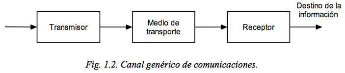
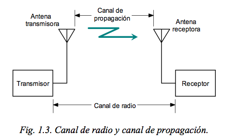

Elements bàsics de la comunicació
El canal de comunicacions pot definir-se en termes generals, com el conjunt de recursos en espectre, espai, temps i equips, necessaris per a realitzar una comunicació. En la seva forma més general, es redueix a un transmissor, un receptor i un mitjà de transport de l'energia electromagnetica com es mostra a la figura 1.2

Transmissor
La seva funció és condicionar les senyals d'informacion en ample de banda i potència per lliurar-les al mitjà de transport.
Receptor
La seva funció és capturar les senyals al mitjà de transport, amplificar-les i condicionar-a fi que resulten intel · ligibles a l'usuari final, sigui aquest una persona, un animal, una màquina, etc.
Mitjà de transport
Pot ser el buit, l'aire, un cable, l'aigua o un altre mitjà material. La majoria de les comunicacions elèctriques fan servir com a mitjà de transport l'aire, cables metàl · lics o fibres òptiques.
La definició anterior del canal de comunicacions és molt àmplia i en la pràctica, sovint es parla de "canal" per fer referència només a una part de la totalitat del sistema, sovint, al mitjà de transport, el que dóna lloc a les següents definicions, entre d'altres:
Canal de Ràdio
Al canal de ràdio, l'energia electromagnètica generada en el transmissor és radiada al mitjà de transmissió i transportada fins al receptor, sense connexió física entre aquest i el transmissor. La radiodifusió sonora, la televisio i la telefonia movil són els exemples més comuns de canals de ràdio. L'estructura general de la cadena de ràdio es mostra a la figura 1.3 i comprèn des de la sortida del transmissor a l'entrada del receptor, incloent-hi les respectives línies de transmissió i antenes. La porció del canal de ràdio que comprèn només el mitjà de transport, és a dir, el buit, l'aire o un altre mitjà material en què es propaga l'energia electromagnètica, sol designar com a canal de propagacio en el qual no s'inclouen ni les antenes ni les línies de transmissió.

Canal de Radiofreqüència (RF)
En la literatura es designa també com a canal de modulació i comprèn, des de la sortida del modulador en el transmissor, fins a l'entrada del demodulador en el receptor. La seva linealitat depèn dels circuits i dispositius posteriors al modulador al costat transmissor i anteriors al demodulador al costat receptor. No és un canal lineal ni recíproc.
Canal Digital
En sistemes digitals, comprèn des de l'entrada de la seqüència digital no modulada a la sortida del codificador en el transmissor, fins a la seqüència regenerada a la sortida del demodulador, és a dir l'entrada del descodificador en el receptor. No és lineal ni recíproc.